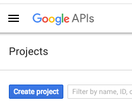

管理
這些偏好適用於系統的一般設定。
Get there: More > Administration > Global system preferences > Administration
OrderPriceRounding
此系統偏好允許您在充電時選擇使用精確值或四捨五入值。
CAS authentication
中央認證系統 (Central Authentication Service, CAS) 是網頁的單一登入協定。若不明白其用途，則使用預設值即可。
casAuthentication
預設值：不用
詢問：採用 ___ CAS 中央認證系統登入。
casLogout
詢問：登出 Koha 即登出 CAS：___
預設值：否
值:
不
是的
說明：
登出 CAS 或時間已到，不僅登出 CAS 伺服器也登出 CAS 所有的應用程式。
說明
必須設定 CAS 伺服器，才能允許單次登出，否則沒有任何改變
casServerUrl
詢問：CAS 中央認證系統伺服器在 ___
Google OpenID 連結
進入 Google Developers Console 取得適用於 Google 與其他應用程式的 OAuth 2.0 客戶 ID 與安全等認證。

新增計畫時，給詳細的說明以便日後的辨識

接著搜尋 Google身份與訪問管理API

啟用 Google身份及訪問管理API

進入 ‘Credentials’ 且設定OAuth cosent螢幕數據

接著選擇從 ‘Credentials’ 頁面選擇 ‘Create credentials’

從 ‘應用類型’ 選單中選取 ‘網頁應用’，再填入表單

在 OPACBaseURLSet 中設定 ‘授權JavaScript 來源’
將 ‘被授權重新定向 URIs’ 設定為 http://YOUROPAC/cgi-bin/koha/svc/auth/googleopenidconnect
儲存之後，顯示客戶 ID 與安全

GoogleOAuth2ClientID
詢問：Google OAuth2 Client ID: ___
說明：
輸入設定Google API時提供的客戶ID（見 :ref:`Google OpenID 連結<google-openid-connect-label>`以上）
You will also need to enter the client secret in GoogleOAuth2ClientSecret and enable GoogleOpenIDConnect to use Google Open ID in the OPAC.
GoogleOAuth2ClientSecret
詢問：Google OAuth2 Client Secret: ___
說明：
輸入設定Google API時提供的客戶ID（見 :ref:`Google OpenID 連結<google-openid-connect-label>`以上）
You will also need to enter the client secret in GoogleOAuth2ClientID and enable GoogleOpenIDConnect to use Google Open ID in the OPAC.
GoogleOpenIDConnect
詢問：以 Google OpenID Connect 登入OPAC：___
預設值：否
备注
在 Google 雲端新增應用程式，與設定啟始網頁給 your_opac_url 及轉址至 your_opac_url/cgi-bin/koha/svc/auth/googleopenidconnect 時，應選用 OAuth2。
值:
不
是的
說明：
這個系統偏好使人們能夠使用Google OpenID連接來連接到OPAC。
Make sure to also configure GoogleOAuth2ClientID and GoogleOAuth2ClientSecret
GoogleOpenIDConnectAutoRegister
詢問：___ 讀者以Google Open ID 自動註冊登入。
預設：不允許
值:
不允許
允許
說明：
When GoogleOpenIDConnect is enabled, this system preference enables the automatic creation of patrons in Koha when they log in using Google OpenID Connect.
Make sure to fill out GoogleOpenIDConnectDefaultBranch and GoogleOpenIDConnectDefaultCategory to set the default library and category code for those patrons created automatically.
GoogleOpenIDConnectDefaultBranch
詢問：以Google Open ID 讀者自動登入時使用此條碼: ___
說明：
When GoogleOpenIDConnect and GoogleOpenIDConnectAutoRegister are enabled, this system preference determines the default home library for those patrons created automatically.
輸入一個分行代碼。分行代碼可以在管理模組的 :ref:`圖書館<libraries-label>`部分找到。
Make sure to fill out GoogleOpenIDConnectDefaultCategory also.
GoogleOpenIDConnectDefaultCategory
詢問：以Google Open ID讀者自動登入時使用此類型的代碼：___
說明：
When GoogleOpenIDConnect and GoogleOpenIDConnectAutoRegister are enabled, this system preference determines the default patron category for those patrons created automatically.
Enter a category code. Category codes can be found in the patron categories section of the administration module.
Make sure to fill out GoogleOpenIDConnectDefaultBranch also.
GoogleOpenIDConnectDomain
詢問：限制Google OpenID連接到此網域（或此網域的次網域）：___
备注
所有的 google 網址均空白
說明：
這個系統偏好將讀者的登入限制在某些網域。
介面選項
這些偏好與 Koha 的介面有關
AddressForFailedOverdueNotices
預設值：空白
詢問: 電子郵件地址失敗的逾期通知已寄送到: ___如果留空, 它會使用在下列清單中第一個定義的地址: 圖書館回信至, 圖書館電子信箱, ReplytoDefault及KohaAdminEmailAddress。
說明：
This system preference controls where the summarized overdue email for patrons without email addresses is sent to.
DebugLevel
預設值：很多
詢問：發生內部錯誤時瀏覽器顯示 ___ 除錯資訊。
值:
很多 - 儘量顯示資訊
無 - 只顯示基本的錯誤資訊
部份 - 只顯示部份可得的資訊
說明：
This system preference determines how much information will be sent to the user’s screen when the system encounters an error. The most detail will be sent when the value level is set at 2, some detail will be sent when the value is set at 1, and only a basic error message will display when the value is set at 0. This setting is especially important when a system is new and the administration is interested in working out the bugs (errors or problems) quickly. Having detailed error messages makes quick fixes more likely in problem areas.
DefaultToLoggedInLibraryCircRules
預設值：所有圖書館
詢問：編輯流通規則時，顯示 ___ 規則為預設值。
值:
所有圖書館
登入圖書館的
說明：
This system preference controls the default value in the library pull down found at the top of the circulation and fines rules.
DefaultToLoggedInLibraryNoticesSlips
預設值：所有圖書館
詢問：編輯通知與收條時，顯示 ___ 通知與收條做為預設值。
值:
所有圖書館
登入圖書館的
說明：
This system preference controls the default value in the library pull down found at the top of the notices and slips tool.
DefaultToLoggedInLibraryOverdueTriggers
預設值：所有圖書館
詢問：編輯逾期通知/啟動狀態時，顯示 ___ 規則做為預設值。
值:
所有圖書館
登入圖書館的
說明：
This system preference controls the default value in the library pull down found at the top of the overdue notice/status triggers.
CSVDelimiter
詢問：輸出的CSV文件中各列的預設分隔符: ___。
預設值：分號
值:
#’s
反斜線
逗號
分號
斜線
定位點
說明：
This system preference determines how reports exported from Koha will separate data. In many cases you will be able to change this option when exporting if you’d like.
EmailOverduesNoEmail
Default: don’t send
Asks: ___ overdue notices for patrons without email address to staff.
值:
Don’t send
Send
說明：
If this system preference is enabled, overdue notices for patrons without an email address will be sent to staff.
KohaAdminEmailAddress
This is the default ‘From’ address for emails unless there is one for the particular library, and is referred to when an internal error occurs.
詢問：以 ___ 為Koha管理者的電子郵件信箱。
說明：
This system preference allows one email address to be used in warning messages set to the OPAC. If no email address is set for the library this address will receive messages from patrons regarding modification requests, purchase suggestions, and questions or information regarding overdue notices. It is recommended that a email address that can be accessed by multiple staff members be used for this purpose so that if one librarian is out the others can address these requests. This email address can be changed when needed.
noItemTypeImages
Asks: ___ itemtype icons in the staff interface.
Default: Show
值:
Don’t show
Show
說明：
This system preference allows the system administrator to determine if users will be able to set and see an item type icon in the catalog in the staff interface.
如果館藏類型的圖像被禁用，館藏類型的文字標籤仍會出現在館員介面。
The OpacNoItemTypeImages system preference is used to show or hide the itemtype images in the OPAC.
ReplytoDefault
詢問：使用 ___ 為電子郵件帳號做為回信之用
說明：
通知信的預設回覆電子郵件信箱是 圖書館電子郵件信箱，可以在這裡設定回覆的電子郵件信箱。
ReturnpathDefault
詢問：使用 ___ 做為回覆的電子郵件，若空白則使用 KohaAdminEmailAddress。
說明：
The return path is the email address that bounces will be delivered to. By default bounced notices will go to the library email address, if you would like to specify a default email address for bounces to go to then fill in this system preference.
SendAllEmailsTo
詢問：所有訊息以電子郵件轉送至：___ (此欄位空白則送至正常的收件人)
說明：
以此系統偏好的設定取代讀者原來的電子郵件，發送各種通知。在測試環境中使用它，以免寄出垃圾郵件。
重要的
不在正式的環境中運作。否則，沒有讀者會收到預期的通知。
virtualshelves
預設值：允許
詢問： ___ 館員與讀者新增與檢視儲存的虛擬書架。
值:
允許
不允許
說明：
This system preference controls whether the lists functionality will be available in the staff interface and OPAC. If this is set to “Don’t allow” then no one will be able to save items to public or private lists.
登入選項
此偏好與登入 Koha 系統有關
AutoLocation
預設值：非必須
詢問：館員 ___ 由指定的 IP 位址範圍內登入。
從圖書館管理區塊設定 IP 位址範圍
到那裡： 更多 > 管理 > 基本參數 > 圖書館
值:
非必須
必須
說明：
This system preference protects the system by blocking unauthorized users from accessing the staff interface program and settings. Authorized and unauthorized users are determined by their computer’s IP addresses. When the preference is set to ‘Require’, IP authorization is in effect and unauthorized IP addresses will be blocked. This means that staff cannot work from home unless their IP address has been authorized. When set to ‘Don’t require’, anyone with a staff interface login will have access no matter which IP address they are using.
IndependentBranches
詢問: 避免館員 (不含超級館員) 修改屬於其他圖書館的物件 (預約、館藏、讀者等)：___
預設值：否
值:
不
是的
說明：
This system preference should only be used by library systems which are sharing a single Koha installation among multiple branches but are considered independent organizations, meaning they do not share material or patrons with other branches and do not plan to change that in the future. If set to ‘Yes’ it increases the security between library branches by:
prohibiting staff users from logging into another library from within the staff interface,
filtering out patrons from patron searches who are not a part of the login library conducting the search,
limiting the location choices to the login library when adding or modifying an item record,
preventing users from other library locations from placing holds or checking out materials from library branches other than their own, and
防止館員編輯屬於其他圖書館分行機構的館藏記錄。
所有這些安全保障措施只有超級圖書館員才能推翻，這是最高級別的特權。
警告
重要的是，在上線之前設定此值，並且在生產過程中**不要**更改。
IndependentBranchesPatronModifications
預設值：否
詢問：避免館員 (不含 superlibrarian) 檢視與認可/拒絕其他圖書館讀者編修的資料。___
值:
不
是的
SessionRestrictionByIP
預設值：啟用
詢問：基於安全理由 ___ 檢查遠端 IP 位址的改變。經常改變遠端 IP 位址時才停用它。
值:
停用
啟用
說明：
When this system preference is set to ‘Enable’ Koha will log you out of the staff interface if your IP address changes as a security measure. For some systems the IP address changes frequently so you’ll want to set this system preference to ‘Disable’ to prevent Koha from logging you out of the staff interface every time that happens.
重要的
This is meant to help those whose IP address changes several times during the day, setting this system preference to ‘Disable’ is not recommended otherwise because it is removing important security features from your staff interface.
SessionStorage
預設值：在 MySQL 資料庫裡
詢問： 儲存登入資訊在 ___
值:
暫存檔
在 MySQL 資料庫中
在 PostgreSQL 資料庫中
重要的
Koha 還不支援 PostgreSQL
說明：
This system preference allows administrators to choose what format session data is stored in during web sessions.
暫停
預設值：12000000
詢問： 經過 ___ 毫秒後沒有動靜後自動登出。
說明：
This system preference sets the length of time the staff interface or OPAC accounts can be left inactive before re-logging in is necessary. The value of this system preference is in seconds. At this time, the amount of time before a session times out must be the same for both the Staff Client and the OPAC.
SSL 客戶端認證欄位
AllowPKIAuth
預設值：否
詢問： 使用 ___ SSL客戶端認證欄位
值:
無
共同名稱
電子郵件
System preferences
UnsubscribeReflectionDelay, PatronAnonymizeDelay 以及讀者移除延遲
這是一個新功能，允許你在讀者提交退訂請求（拒絕同意）後設定一定的天數，對鎖定/過期的帳戶進行匿名處理，並刪除匿名的讀者。
SearchEngine
預設值：Zebra
詢問：使用以下的搜尋引擎：___
值:
Elasticsearch
Zebra